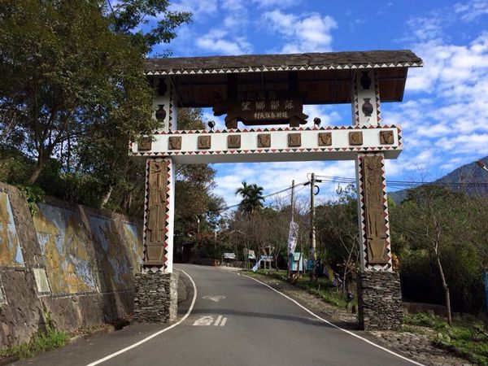

望鄉部落
望鄉部落座落玉山山脈西北方海拔近一千公尺的地方，是全台灣唯一可以清楚眺望玉山主峰的 部落，這也是族人引以為傲的地方，從玉山主峰拂吹而來的風孕育了部落多采多姿的人文與自 然生態。望鄉(Bukiu)一名是日據時代日警為懷念日本老鄉而取名之，而布農族人稱部落為卡里 布安(Kalibuan)，因為在日據時代族人被遷至本部落時發現部落長滿了一種被稱為卡里布(Kalibu) 的植物才稱之。 Kalibu有很長一段時間消失蹤影，現在族人開始積極復育，找回部落生命力。